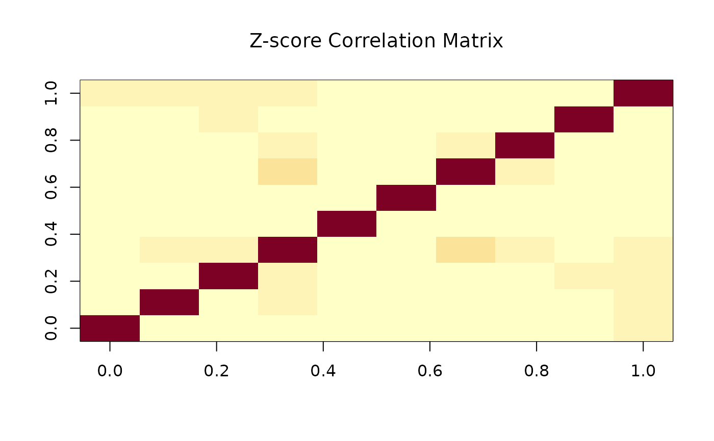

Calculates the standardized marginal score statistics for each variant under a generalized linear model framework. This is the foundation function for all GLOW tests, providing the score statistics and their correlation structure.
For continuous traits, there is an option to use t-statistics from the lm()
function of Y on each column of G and X. This t-statistic is close to the
null-model defined marginal score statistics but not exactly the same, partially
due to different ways of estimating the error variance.
getZ_marg_score(
G,
X = NULL,
Y = NULL,
trait = "binary",
null_model = NULL,
use_lm_t = FALSE,
use_cpp = FALSE
)A numeric matrix of genotypes (n x p), where n is the number of individuals and p is the number of SNPs. Missing values (NA) are not allowed.
A numeric matrix of covariates (n x k), where k is the number of covariates.
Required if null_model = NULL. Ignored if null_model is provided.
A numeric vector of response variable (length n). For binary traits, must be
coded as 0/1. For continuous traits, any numeric values are allowed.
Required if null_model = NULL. Ignored if null_model is provided.
Character string indicating trait type. Must be either "binary" (logistic
regression) or "continuous" (linear regression). Default is "binary".
Ignored if null_model is provided (trait is extracted from null_model).
Optional. A null_model object from fit_null_model().
If provided, the function reuses the pre-computed null model, which can improve
performance for repeated calls with different SNP sets. When null_model is
provided, X, Y, and trait are ignored. Default is NULL
(standard mode - fit null model from X and Y).
Logical. For continuous traits, whether to use t-statistics from
lm() function as Z-scores. If FALSE (default), uses null-model
defined Z-scores. Ignored for binary traits.
Logical. Whether to use C++ implementation for GHG matrix computation.
Default is FALSE (use R). The C++ version may be faster on some platforms
(Linux with standard BLAS), but is not necessarily so on Apple Silicon due to highly
optimized ARM64 BLAS. Set to TRUE to force C++ usage for portability testing.
A list with the following components:
Numeric vector (length p) of standardized marginal score statistics (Z-scores) for each variant
Numeric vector (length p) of marginal score statistics for each variant. For the standard method, \(Z_j = S_j / (\sqrt{M_{s,jj}} \cdot s_0)\) (exact relationship). Compare with the SPA method where Z-scores are derived from SPA-adjusted p-values.
Numeric matrix (p x p) giving the correlation matrix of Z-scores when effects are fixed (including H0), given X and G fixed
Numeric matrix (p x p) giving the covariance matrix of score statistics when effects are fixed (including H0), given X and G fixed
Numeric scalar giving the estimated dispersion parameter. For binary traits, s0 = 1. For continuous traits, s0 is the residual standard deviation under the null model
The function implements the following algorithm:
For Binary Traits (Logistic Regression):
Fit null model: \(\text{logit}(P(Y=1)) = X\beta\)
Compute fitted probabilities: \(Y_0 = \hat{P}(Y=1|X)\)
Define weighted design matrix: \(\tilde{X} = \sqrt{Y_0(1-Y_0)} \cdot X\)
Compute projection: \(H^{1/2} = \tilde{X}({\tilde{X}}'\tilde{X})^{-1/2}\)
Define weighted genotype matrix: \(\tilde{G} = \sqrt{Y_0(1-Y_0)} \cdot G\)
Compute score variance: \(M_s = {\tilde{G}}'{\tilde{G}} - {\tilde{G}}'H^{1/2}{H^{1/2}}'{\tilde{G}}\)
Compute score statistics: \(S = G'(Y - Y_0)\)
Compute Z-scores: \(Z_j = S_j / \sqrt{M_{s,jj}}\)
Set dispersion: \(s_0 = 1\)
For Continuous Traits (Linear Regression):
Fit null model: \(Y = X\beta + \epsilon\)
Compute projection: \(H^{1/2} = X(X'X)^{-1/2}\)
Compute score variance: \(M_s = G'G - G'H^{1/2}{H^{1/2}}'G\)
Obtain residuals: \(r = Y - X\hat{\beta}\)
Estimate dispersion: \(s_0 = \text{SD}(r)\)
Compute score statistics: \(S = G'r / s_0\)
If use_lm_t = TRUE: Extract t-statistics from marginal regressions
If use_lm_t = FALSE: Compute Z-scores as \(Z_j = S_j / \sqrt{M_{s,jj}}\)
The correlation matrix \(M_Z\) is obtained by standardizing \(M_s\): $$M_Z = \text{cor}(M_s)$$
Mathematical Properties:
The Z-scores are asymptotically standard normal under the null hypothesis
\(M_Z\) represents the correlation of Z-scores when effects are fixed (including H0)
\(M_s\) is the covariance matrix of score statistics under fixed effects
The function properly accounts for correlation induced by covariates through projection
Computational Complexity:
Time: \(O(n \cdot p \cdot k + p \cdot k^2)\) where n = sample size, p = number of SNPs, k = number of covariates
Space: \(O(p^2 + n \cdot p + n \cdot k)\)
Zhang, H., Liu, M., Landers, J. E., and Wu, Z. Integrated Weighted Association Test with Application to Genetic Association Studies. Annals of Applied Statistics (in revision).
# Example 1: Continuous trait with null-model Z-scores (default)
set.seed(123)
n <- 500
p <- 10
# Generate genotypes with varying MAF
G <- matrix(0, n, p)
for (j in 1:p) {
maf <- 0.05 * j / p # MAF from 0.005 to 0.05
G[, j] <- rbinom(n, 2, maf)
}
# Covariates: intercept will be added automatically
X <- matrix(rnorm(n * 2), n, 2)
Y <- rnorm(n) # Continuous trait
result_cont <- getZ_marg_score(G, X, Y, trait = "continuous")
head(result_cont$Zscores)
#> [1] 0.73178942 -0.42718517 0.04708312 -1.32524883 -1.22966548 0.10964021
# Example 2: Continuous trait with lm() t-statistics
result_lm_t <- getZ_marg_score(G, X, Y, trait = "continuous", use_lm_t = TRUE)
head(result_lm_t$Zscores)
#> [1] 0.72997814 -0.42597701 0.04694148 -1.32359042 -1.22782521 0.10931145
# Example 3: Binary trait
Y_binary <- sample(c(0, 1), n, replace = TRUE)
result_binary <- getZ_marg_score(G, X, Y_binary, trait = "binary")
head(result_binary$Zscores)
#> [1] 0.6116281 -0.1778623 0.1890274 -1.1363778 1.2678918 -1.4360598
result_binary$s0 # Should be 1 for binary traits
#> [1] 1
# Example 4: Examine correlation structure
result <- getZ_marg_score(G, X, Y, trait = "continuous")
image(result$M_Z, main = "Z-score Correlation Matrix")

# Example 5: Optimized workflow for multiple SNP sets (RECOMMENDED FOR GWAS)
# Create multiple gene sets
gene_sets <- lapply(1:100, function(i) {
matrix(rbinom(n * 5, 2, runif(1, 0.01, 0.1)), n, 5)
})
# Step 1: Fit null model once
null_obj <- fit_null_model(X, Y_binary, trait = "binary")
# Step 2: Reuse for all gene sets (much faster!)
results_optimized <- lapply(gene_sets, function(G_gene) {
getZ_marg_score(G_gene, null_model = null_obj)
})
# This is ~10-100x faster than refitting null model for each gene set